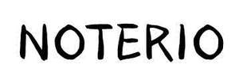

Trade Mark Journal No.2025/015 11 April 2025
UK00004181355 29 March 2025 (9,16,18,21,28)

- Class 9
- Mobile phone ring holders; Holders adapted for mobile phones; Ring holders for mobile telephones; Mobile phone chargers; Mobile phones; Mobile phone straps; Mobile phone covers; Mobile phone cases; Cases for mobile phones.
- Class 16
- Binders (office supplies); Binders [office supplies]; Office stationery; Stationery (Cabinets for -) [office requisites]; Cabinets for stationery [office requisites]; School supplies [stationery]; Desktop cabinets for stationery [office requisites]; Office staplers; Staplers [office requisites]; Pens [office requisites]; Stationery and educational supplies; Staples [office requisites]; Protractors [for stationery and office use]; Office requisites; Staplers for office use; Office paper stationery; Office perforators; Office machines; Office binders; Binders for the office; Punches [office requisites]; Paper racks [office requisites]; Files [office requisites]; Staplers [office machines]; Office requisites, except furniture; Glues for the office; Office glues; Cutters (Paper -) [office requisites]; Paper cutters [office requisites]; Imprinters for office use; Binders for office use; CD shredders for home or office use; Machines for office use for stamping mail; Printing sets, portable [office requisites]; Staplers (Electric -), for office use; Paper embossers [office requisites]; Machines for office use for sorting documents; Bookbinding apparatus and machines [office equipment]; Staplers for offices; Office paper drill machines; Staples for offices; Finger-stalls [office requisites]; Handheld label printers [office requisites]; Seals for the office; Office seals; Magnetic boards being office requisites; Collators for office use; Bookbinding machines for office use; Office labeling machines; Glue for the office; Stamping machines for office use; Paper cutters for office use; Glues for office use; Paper creasers [office requisites]; Machines for office use in addressing mail; Paper shredders for office use; Adhesive materials for office use; Ribbons for handheld label printers [office requisites]; Fingerstalls being office requisites; Laminating machines for office use; Staple removers [office requisites]; Office labelling machines; Correcting fluids [office requisites]; File sorters [office requisites]; Shredding machines for office use; Book covers; Book binders; Book bindings; Book jackets; Book marks; Check book covers; Book wrappings; Story books; Book markers; Manuscript books; Non-fiction books; Series of non-fiction books; Leather appointment book covers; Leather book covers; Books; Copy books; Comic books; Book binding material; Writing books; Guide books; Paper book markers; Recipe books; Cheque book cases; Book binding materials; Check book holders; Check book cases; Song books; Sketch books; Series of fiction books; Picture books; Cheque book holders; Manga comic books; Fiction books; Poster books; Wallpaper sample book; Autograph books; Reference books; Covers for books; Appointment books; Hymn books; Printed books; Memorandum books; Coloring books; Guest books; Gift books; Covers for cheque books; Cookery books; Note books; Wirebound books; Prayer books; Writing or drawing books; Resource books; Flip books; Travel guide books; Birthday books; Jackets of paper for books; School writing books; Painting books; Travel books; Colouring books; Check books; Cheque books; Address books; Drawing books; Sticker books; Blank journal books; Wedding books; Account books; Fantasy books; Pop-up books; Coupon books; Date books; Pocket memorandum books; Commemorative books; Scrap books; Composition books; Printed music books; Paper for wrapping books; Cook books; Agenda books; Bill books; Index books; Dictation books; Music note books; Ledger books; Pen nibs; Ball-point pen and pencil sets; Ballpoint pen refills; Pen and pencil holders; Pen or pencil holders; Stands for pen and pencil; Pen refills; Ballpoint pens; Pen ink refills; Pen and pencil boxes; Ball-point pens; Pen cartridges; Pens; Pen and pencil cases; Ink for pens; Ink pens; Pen ink cartridges; Felt-tip pens; Pen calligraphy copybooks; Fountain pen ink cartridges; Pen trays; Pen holders; Ink for fountain pens; Marking pen refills; Pen boxes; Rollerball pens; Pen clips; Steel pens [styluses or stencil pens]; Marker pens; Pen rests; Pen stands; Pen wipers; Inkless pens; Balls for ball-point pens; Refills for ballpoint pens; Ink pen refill cartridges; Brush pens; Pen sets; Fountain pens; Highlighter pens; Tips for ballpoint pens; Drawing pens; Pen cases; Ink cartridges for fountain pens; Pocket pen shields; Ink cartridges for pens; Ball pens; India ink pens; Stands for pens and pencils; Skin marker pens; Pens for marking; Marking pens; Etching pens; Fiber-tip pens; Correction pens; Colouring pens; Coloured pens; Marking pens [stationery]; Fibre-tip pens; Colour pens; Steel pens; Gel roller pens; Felt writing pens; Pencil eraser refills; Ball point pens; Writing ink; Roller ball pens; Fibertip pens; Ink erasers; Film pens; Porous tip pens; Pencil erasers; Felt tip pens; Highlighting pens; Felt pens; Glue pens for stationery purposes; Calligraphy ink; Stands for pens; Felt marking pens; Artists' pens; Pencil grips; Ink; Writing brush calligraphy copybooks; Boxes for pens; Notebook paper; Writing paper pads; Drawing ink; Ink for writing instruments; Ink sticks; Typewriter paper; Scribble pads; Ballpoint refill cartridges; Pencil sharpeners; Sharpeners (Pencil -); Propelling pencil refills; Pencil holders; Pencil lead refills; Cartridges (Ink -) for writing instruments; Pencils; Ink sticks (sumi); Calligraphy paper; Retractable pencils; Pencil cups; Pencil caps; Drawing pencils; Scribbling pads; Writing paper; Party stationery; Stationery; Stickers [stationery].
- Class 18
- Clothing for pets; Pets (Clothing for -); Garments for pets; Collars for pets; Clothing for domestic pets; Pet clothing; Raincoats for pet dogs; Bags for carrying pets; Leashes for animals; Clothing for dogs; Clothes for animals; Pet hair bows; Clothing for animals; Electronic pet collars; Collars for animals; Collars of animals; Costumes for animals; Bags (Game -) [hunting accessories]; Game bags [hunting accessories]; Collars for cats; Dog clothing; Animal leashes; Harnesses for animals; Book bags; School book bags; Bags for school; School bags.
- Class 21
- Toothbrushes for pets; Brushes for pets; Cages for pets; Cages for household pets; Pets (Cages for household -); Deshedding brushes for pets; Cages for carrying pets; Wire cages for household pets; Brushes for grooming pet animals; Deshedding combs for pets; De-shedding combs for pets; Trays (Litter -) for pets; Litter trays for pets; Litter boxes for pets; Litter trays for pet animals; Food containers for pet animals; Pets (Litter boxes [trays] for -); Litter boxes [trays] for pets; Litter scoops for use with pet animals; Automatic litter boxes for pets; Caddies for holding hair accessories for household and domestic use; Electric pet brushes; Household containers for storing pet food; Pet feeding bowls; Electronic pet feeders; Pet feeding dishes; Pet feeding and drinking bowls; Animal-activated pet feeders; Non-mechanized pet waterers in the nature of portable water and fluid dispensers for pets; Pet paw cleaners, non-electric; Pet grooming glove; Pet drinking bowls; Pet feeding bowls, automatic; Pet lick mats; Automatic pet feeders; Feeding vessels for pets; Scoops for the disposal of pet waste.
- Class 28
- Toys; Toys, games, and playthings; Toys and playthings for pets; Ride-on toys; Cuddly toys; Puzzles [toys]; Toys for sandpits; Plush toys; Inflatable toys; Stuffed toys; Noisemakers [toys]; Toys for babies; Toys for pets; Fidget toys; Toys for use in perambulators; Wind-up toys; Plastic toys; Radio-controlled toys; Scooters [toys]; Crib toys; Toys for animals; Mobiles [toys]; Toys, games and playthings for pet animals; Pet toys; Windup toys; Rattles [toys]; Toys for infants; Toys for cats; Model cars [toys or playthings]; Wooden toys; Toys and playthings for pet animals; Toys for dogs; Toy dolls; Educational toys; Outdoor toys; Bendable toys; Bath toys; Toy playsets; Models being toys; Infant toys; Dog toys; Sandbox toys; Bathtub toys; Electronic toys; Action figures [toys or playthings]; Whistles [toys]; Sand toys; Inflatable ride-on toys; Controllers for toys; Bouncing toys; Soft toys; Miniature car models [toys or playthings]; Drones [toys]; Cloth toys; Musical toys; Toy figurines; Tricycles for infants [toys]; Toy furniture; Mechanical toys; Play mats for use with toy vehicles [playthings]; Toys for birds; Wheeled toys; Clockwork toys; Developmental toys; Plastic toys for use in the bath; Crib mobiles [toys]; Fluffy toys; Stuffed animals [toys]; Inflatable bath toys; Rocking toys; Fabric toys; Stacking toys; Plastic models being toys; Water toys; Modular toys; Model toys; Whack-a-mole toys for pets; Play mats incorporating infant toys [playthings]; Drawing toys; Toy prams; Action toys; Stuffed and plush toys; Stuffed plush toys; Plush stuffed toys; Battery-operated action toys; Sketching toys; Children's toys; Squeezable squeaking toys; Toy bicycles; Plastic character toys; Whistling toys; Smart toys; Toy tableware; Construction toys; Clockwork toys [of plastics]; Articles of clothing for toys; Toy wheelbarrows; Push toys; Talking toys; Squeeze toys; Toy bakeware and toy cookware; Toy mobiles; Toy xylophones; Stuffed bean-filled toys; Bendy balls being toys; Chewing toys for parrots; Clothing for toy figures; Toy animals; Toy cars; Water-squirting toys; Toy strollers; Toys for pet animals; Assembly toys; Pull toys; Toy balloons; Toy scooters; Intelligent toys; Toy hats; Toy cookware; Punching toys; Toy automobiles; Music box toys; Toy harmonicas; Toy robots; Smart plush toys; Toy tools; Toy weapons; Xylophones being musical toys; Toys in the form of puzzles; Novelty toys for parties; Soft sculpture toys; Toy glockenspiels; Inflatable pool toys; Costumes being childrens playthings; Toy balls; Toy airplanes; Toy pushchairs; Puzzle mats [toys]; Toy vehicles; Toy bakeware; Playthings; Games; Games consoles; Arcade games; Pinball games; Sports games; Backgammon games; Chess games; Hockey games; Cards [games]; Checkers [games]; Checkers games; Mah-jongg games; Table-top games; Coin-operated games; Low-friction game tables for playing hockey games; Marbles for games; Games (Marbles for -); Miniatures for use in games; Dice games; Balls for playing games; Balls for games; Games (Balls for -); Bowls [games]; Draughts [games]; Marbles for playing games; Skittles [games]; Joysticks for video games; Parlor games; Tabletop basketball games; Boards games; Board games; Parlour games; Hand-held consoles for playing video games; Card games; Game consoles; Quiz games; Bats for games; Dart games; Party games; Memory games; Musical games; Game boards for trading card games; Electronic games; Go games; Tabletop games and gambling devices; Interactive gaming chairs for video games; Games (Apparatus for -); Gloves for games; Boule games; Apparatus for games; Building games; Video game consoles; Arcade basketball shooting games; Counters for games; Balls for playing boules games; Compendiums of board games; Manipulative games; Mechanical games; Role playing games; Horseshoe games; Video game apparatus, arcade games, and amusement machines ; Hand-held pinball games; Role play games; Trading cards for games; Pinball games machines [toys]; Scratch cards for playing lottery games; Controllers for computer games; Handheld computer games; Target games; Hand held units for playing video games; Ring games; Miniatures for use in war games; Computer game consoles; Bingo game playing equipment; Chinese chess as games; Game cards; Models for use with war games; Playing cards and card games; Video game joysticks; Controllers for game consoles; Handheld game consoles; Markers [counters] for playing games; Nets for ball games; Trading card games; Skill and action games; Action skill games; Bats for ball games; Chinese checkers [games]; Toys for domestic pets; Sports equipment for pets; Accessories for dolls; Ball launchers for pets; Toys for translating feelings of pets; Doll accessories; Toy petrol supply apparatus; Pet toys containing catnip; Pet toys made of rope.
MOHAMMED ABDUL ADNAN